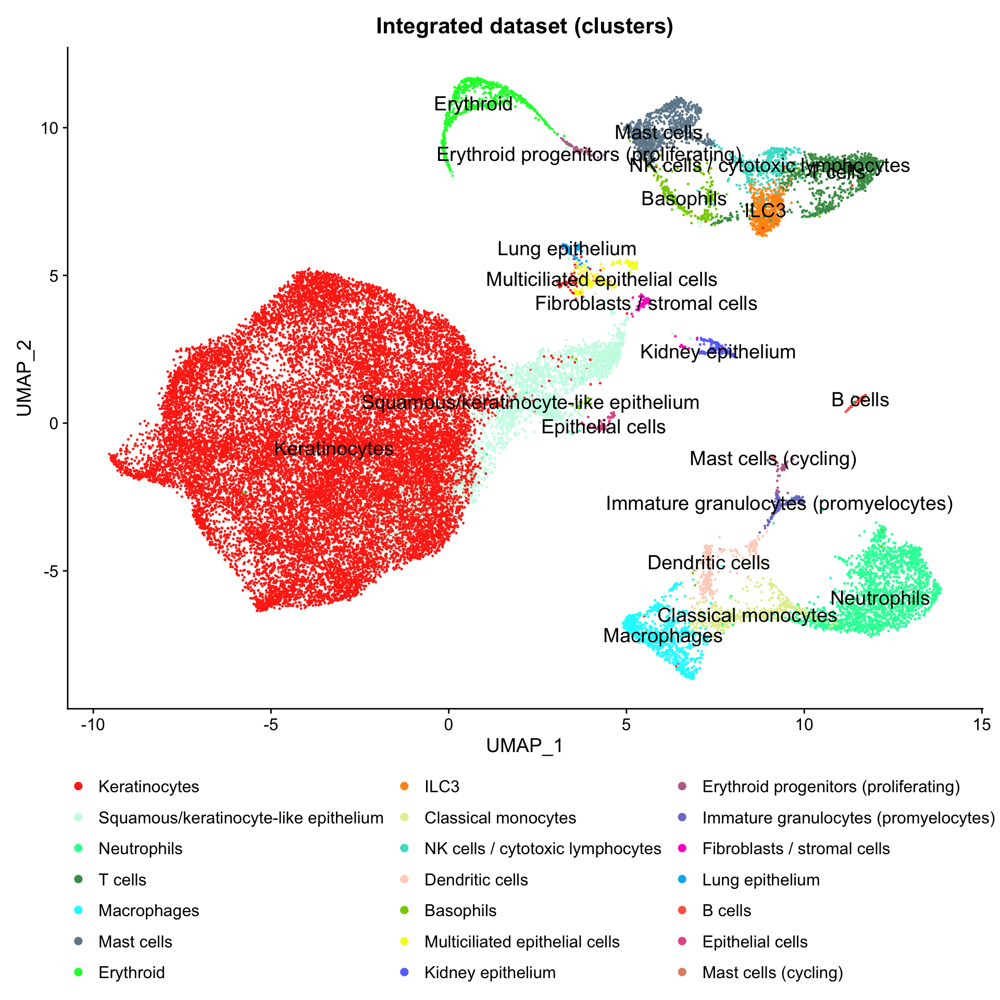
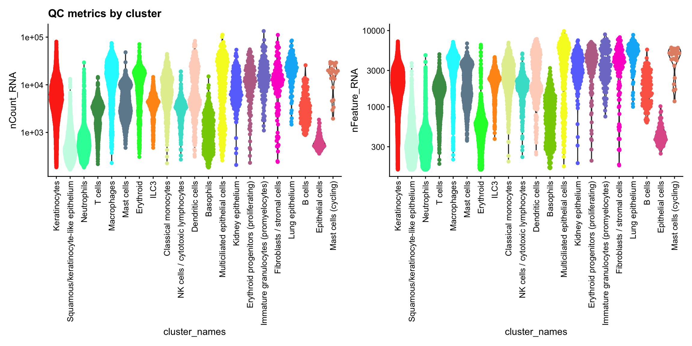
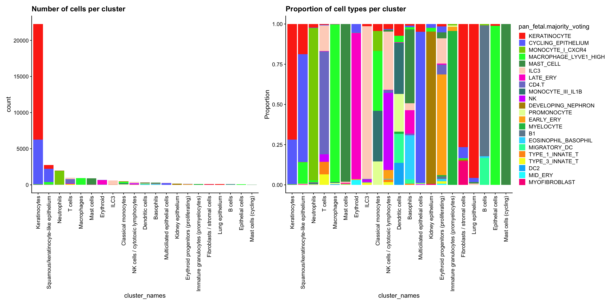
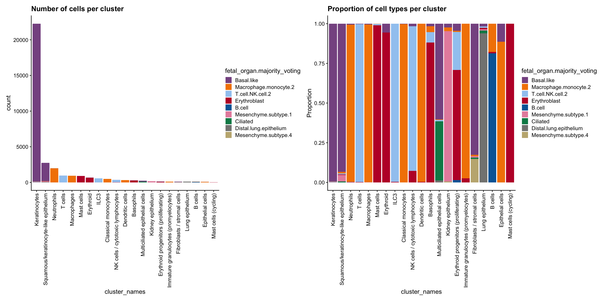
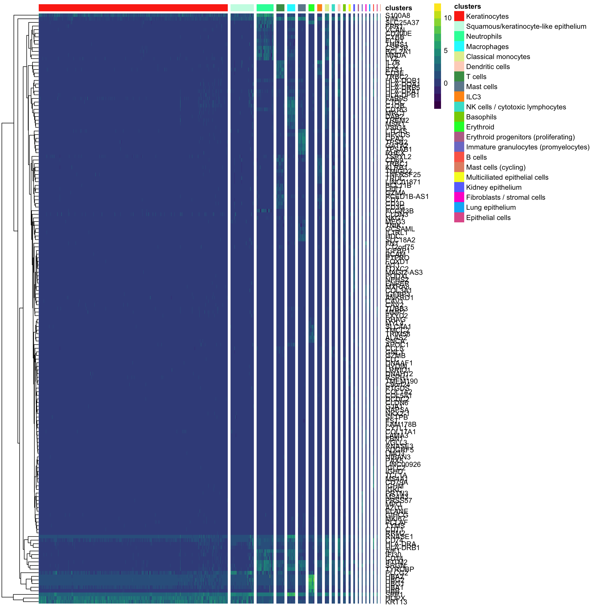
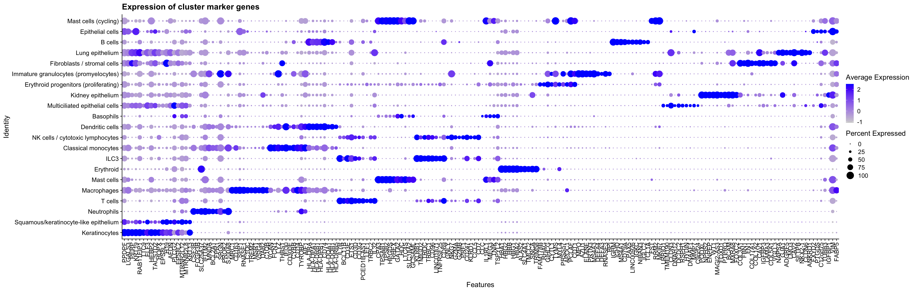
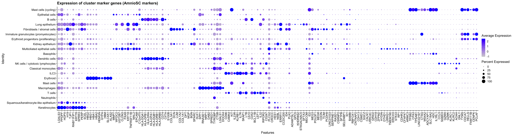
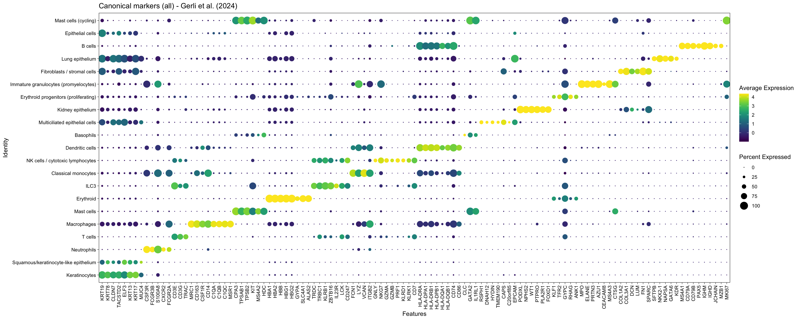
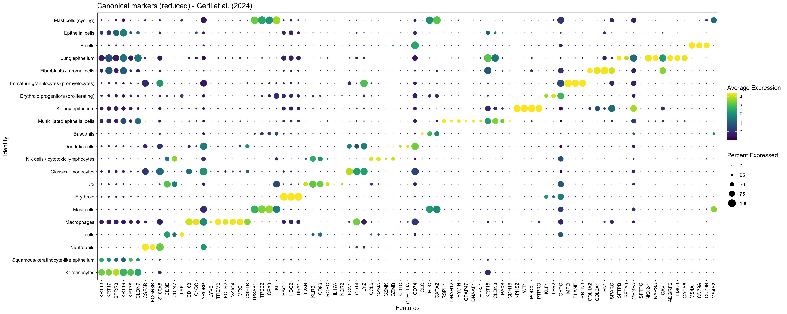

Last updated: 2026-09-24
Checks: 7 0
Knit directory: amniosinglecell/
This reproducible R Markdown analysis was created with workflowr (version 1.7.2). The Checks tab describes the reproducibility checks that were applied when the results were created. The Past versions tab lists the development history.
Great! Since the R Markdown file has been committed to the Git repository, you know the exact version of the code that produced these results.
Great job! The global environment was empty. Objects defined in the global environment can affect the analysis in your R Markdown file in unknown ways. For reproduciblity it’s best to always run the code in an empty environment.
The command set.seed(20220125) was run prior to running
the code in the R Markdown file. Setting a seed ensures that any results
that rely on randomness, e.g. subsampling or permutations, are
reproducible.
Great job! Recording the operating system, R version, and package versions is critical for reproducibility.
Nice! There were no cached chunks for this analysis, so you can be confident that you successfully produced the results during this run.
Great job! Using relative paths to the files within your workflowr project makes it easier to run your code on other machines.
Great! You are using Git for version control. Tracking code development and connecting the code version to the results is critical for reproducibility.
The results in this page were generated with repository version c705f9b. See the Past versions tab to see a history of the changes made to the R Markdown and HTML files.
Note that you need to be careful to ensure that all relevant files for
the analysis have been committed to Git prior to generating the results
(you can use wflow_publish or
wflow_git_commit). workflowr only checks the R Markdown
file, but you know if there are other scripts or data files that it
depends on. Below is the status of the Git repository when the results
were generated:
Ignored files:
Ignored: .DS_Store
Ignored: .Rhistory
Ignored: .Rproj.user/
Ignored: analysis/generate_site.R
Ignored: analysis/knit_docs.R
Ignored: analysis/run_as_job.R
Ignored: analysis/sccomp_draws_files/
Ignored: celltypist/output_Gerli_et_al_2024_fetal_organ/
Ignored: celltypist/output_Gerli_et_al_2024_pan_fetal/
Ignored: data/
Ignored: excluded_analysis/
Ignored: output/
Ignored: renv/.DS_Store
Ignored: renv/library/
Ignored: renv/staging/
Ignored: sccomp_draws_files/
Untracked files:
Untracked: AmnioSC_Manuscript_Claude/
Untracked: claude_log/
Note that any generated files, e.g. HTML, png, CSS, etc., are not included in this status report because it is ok for generated content to have uncommitted changes.
These are the previous versions of the repository in which changes were
made to the R Markdown
(analysis/Gerli_et_al_2024.cluster_marker_gene_analysis.Rmd)
and HTML
(docs/Gerli_et_al_2024.cluster_marker_gene_analysis.html)
files. If you’ve configured a remote Git repository (see
?wflow_git_remote), click on the hyperlinks in the table
below to view the files as they were in that past version.
| File | Version | Author | Date | Message |
|---|---|---|---|---|
| html | 596bb27 | Calandra Grima | 2026-09-16 | Build site. |
| Rmd | 399a00d | Calandra Grima | 2026-09-16 | wflow_publish(here("analysis", "Gerli_et_al_2024.cluster_marker_gene_analysis.Rmd")) |
| html | e5659e3 | Calandra Grima | 2026-09-16 | Build site. |
| Rmd | e8b2189 | Calandra Grima | 2026-09-16 | wflow_publish(here("analysis", "Gerli_et_al_2024.cluster_marker_gene_analysis.Rmd")) |
| html | dc0d8d7 | Calandra Grima | 2026-09-04 | Build site. |
| Rmd | 17ded8e | Calandra Grima | 2026-09-04 | wflow_publish(here("analysis", "Gerli_et_al_2024.cluster_marker_gene_analysis.Rmd")) |
| html | 2afaee8 | Calandra Grima | 2026-08-05 | Build site. |
| Rmd | 1e36d6f | Calandra Grima | 2026-08-05 | wflow_publish(here("analysis", "Gerli_et_al_2024.cluster_marker_gene_analysis.Rmd")) |
| html | 1706605 | Calandra Grima | 2026-08-05 | Build site. |
| Rmd | d8d4448 | Calandra Grima | 2026-08-05 | wflow_publish(here("analysis", "Gerli_et_al_2024.cluster_marker_gene_analysis.Rmd")) |
| html | 3d15207 | Calandra Grima | 2026-08-05 | Build site. |
| html | bb959b0 | Calandra Grima | 2026-08-04 | Build site. |
| Rmd | bccb576 | Calandra Grima | 2026-08-04 | wflow_publish(here("analysis", "Gerli_et_al_2024.cluster_marker_gene_analysis.Rmd")) |
| html | e4c6294 | calandra.grima | 2026-06-30 | Build site. |
| Rmd | fe7115a | calandra.grima | 2026-06-30 | wflow_publish(here("analysis", "Gerli_et_al_2024.cluster_marker_gene_analysis.Rmd")) |
| html | 6a90a43 | calandra.grima | 2026-04-29 | Build site. |
| Rmd | fa59460 | calandra.grima | 2026-04-29 | wflow_publish(here("analysis", "Gerli_et_al_2024.cluster_marker_gene_analysis.Rmd")) |
| html | dd430ce | calandra.grima | 2026-02-18 | Build site. |
| Rmd | b6c4879 | calandra.grima | 2026-02-18 | wflow_publish(here("analysis", "Gerli_et_al_2024.cluster_marker_gene_analysis.Rmd")) |
| html | 0d3eb91 | Calandra Grima | 2025-11-21 | Build site. |
| Rmd | 14bbba5 | Calandra Grima | 2025-11-21 | wflow_publish(here("analysis", "Gerli_et_al_2024.cluster_marker_gene_analysis.Rmd")) |
| html | 6329568 | Calandra Grima | 2025-11-21 | Build site. |
| html | fb9943b | Calandra Grima | 2025-11-20 | Build site. |
| Rmd | dcd2f16 | Calandra Grima | 2025-11-20 | wflow_publish(here("analysis", "Gerli_et_al_2024.cluster_marker_gene_analysis.Rmd")) |
| html | 2b8a95c | Calandra Grima | 2025-04-14 | Build site. |
| html | 45d32b2 | Calandra Grima | 2025-04-04 | Build site. |
| Rmd | 58cde16 | Calandra Grima | 2025-04-04 | Clean up files and remove excluded files from git |
| html | e68ccbd | Calandra Grima | 2025-03-21 | Build site. |
| Rmd | 3c29b49 | Calandra Grima | 2025-03-21 | wflow_publish(here("analysis", "Gerli_et_al_2024.cluster_marker_gene_analysis.Rmd")) |
| html | e8d08e4 | Calandra Grima | 2025-03-14 | Build site. |
| Rmd | 0e76af1 | Calandra Grima | 2025-03-14 | wflow_publish(here("analysis", "Gerli_et_al_2024.cluster_marker_gene_analysis.Rmd")) |
| html | 9fa120c | Calandra Grima | 2025-01-24 | Build site. |
| Rmd | 06ca304 | Calandra Grima | 2025-01-24 | wflow_publish(here("analysis", "Gerli_et_al_2024.cluster_marker_gene_analysis.Rmd")) |
| html | afadf33 | Calandra Grima | 2025-01-15 | Build site. |
| Rmd | 7e021c0 | Calandra Grima | 2025-01-15 | wflow_publish(here("analysis", "Gerli_et_al_2024.cluster_marker_gene_analysis.Rmd")) |
| Rmd | d8c14fe | Calandra Grima | 2025-01-08 | Rename Gerli analysis pages to a less confusing naming scheme |
| html | d8c14fe | Calandra Grima | 2025-01-08 | Rename Gerli analysis pages to a less confusing naming scheme |
library(Seurat)
library(SeuratObject)
library(limma)
library(edgeR)
library(org.Hs.eg.db)
library(GO.db)
library(pheatmap)
library(ggplot2)
library(ggbeeswarm)
library(viridis)
library(cowplot)
library(patchwork)
library(egg)
library(rmarkdown)
library(tidyr)
library(workflowr)
library(here)
source(here("code", "helper_functions.R"))
source(here("code", "load_colour_schemes.R"))
RERUN_ALL <- FALSEseu_int <- readRDS(here("data", "Gerli_et_al_2024", "Gerli_et_al_2024.Refined_labels.Seurat.rds"))DimPlot(seu_int, reduction = 'umap', label = TRUE, label.size = 5,
group.by = "cluster_names") +
scale_colour_manual(values = CLUSTER_NAME_COLOURS.GERLI) +
guides(color=guide_legend(ncol = 3, override.aes = list(size=2))) +
bottom_legend +
ggtitle("Integrated dataset (clusters)")Warning: `aes_string()` was deprecated in ggplot2 3.0.0.
ℹ Please use tidy evaluation idioms with `aes()`.
ℹ See also `vignette("ggplot2-in-packages")` for more information.
ℹ The deprecated feature was likely used in the Seurat package.
Please report the issue at <https://github.com/satijalab/seurat/issues>.
This warning is displayed once per session.
Call `lifecycle::last_lifecycle_warnings()` to see where this warning was
generated.
seu_int@meta.data %>%
ggplot(aes(x = cluster_names,
y = nCount_RNA)) +
geom_violin(scale = "area") +
geom_quasirandom(aes(color = cluster_names)) +
scale_y_log10() +
theme_cowplot(12) + rotate_x_labels +
scale_colour_manual(values = CLUSTER_NAME_COLOURS.GERLI) +
no_legend +
ggtitle("QC metrics by cluster") -> p1
seu_int@meta.data %>%
ggplot(aes(x = cluster_names,
y = nFeature_RNA)) +
geom_violin(scale = "area") +
geom_quasirandom(aes(color = cluster_names)) +
scale_y_log10() +
theme_cowplot(12) + rotate_x_labels +
scale_colour_manual(values = CLUSTER_NAME_COLOURS.GERLI) +
no_legend -> p2
p1 | p2
p1 <- seu_int@meta.data %>%
ggplot(aes(x = cluster_names,
fill = pan_fetal.majority_voting)) +
geom_bar() +
theme_cowplot(12) + rotate_x_labels +
scale_fill_manual(values = ALL_CELL_TYPE_COLOURS[levels(seu_int$pan_fetal.majority_voting)]) +
no_legend +
ggtitle("Number of cells per cluster")
p2 <- seu_int@meta.data %>%
ggplot(aes(x = cluster_names,
fill = pan_fetal.majority_voting)) +
geom_bar(position="fill") +
theme_cowplot(12) +
ylab("Proportion") + rotate_x_labels +
scale_fill_manual(values = ALL_CELL_TYPE_COLOURS[levels(seu_int$pan_fetal.majority_voting)]) +
guides(fill=guide_legend(ncol = 1)) +
ggtitle("Proportion of cell types per cluster")
p1 | p2
| Version | Author | Date |
|---|---|---|
| 596bb27 | Calandra Grima | 2026-09-16 |
| 3d15207 | Calandra Grima | 2026-08-05 |
| bb959b0 | Calandra Grima | 2026-08-04 |
| dd430ce | calandra.grima | 2026-02-18 |
| fb9943b | Calandra Grima | 2025-11-20 |
| 2b8a95c | Calandra Grima | 2025-04-14 |
| e68ccbd | Calandra Grima | 2025-03-21 |
| 9fa120c | Calandra Grima | 2025-01-24 |
| afadf33 | Calandra Grima | 2025-01-15 |
p1 <- seu_int@meta.data %>%
ggplot(aes(x = cluster_names,
fill = fetal_organ.majority_voting)) +
geom_bar() +
theme_cowplot(12) + rotate_x_labels +
scale_fill_manual(values = ALL_CELL_TYPE_COLOURS[levels(seu_int$fetal_organ.majority_voting)]) +
ggtitle("Number of cells per cluster")
p2 <- seu_int@meta.data %>%
ggplot(aes(x = cluster_names,
fill = fetal_organ.majority_voting)) +
geom_bar(position="fill") +
theme_cowplot(12) +
ylab("Proportion") + rotate_x_labels +
scale_fill_manual(values = ALL_CELL_TYPE_COLOURS[levels(seu_int$fetal_organ.majority_voting)]) +
guides(fill=guide_legend(ncol = 1)) +
ggtitle("Proportion of cell types per cluster")
p1 | p2
counts <- as.matrix(seu_int[["RNA"]]@counts)Warning in asMethod(object): sparse->dense coercion: allocating vector of size
5.8 GiBsample <- seu_int$Sample
clusters <- seu_int$refined_clusters
clustgrp <- factor(clusters, levels = levels(seu_int$refined_clusters))
fit.cont <- findMarkerGenes(counts, clustgrp, sample)
summary(decideTests(fit.cont)) Cluster_01 Cluster_02 Cluster_03 Cluster_04 Cluster_05 Cluster_06
Down 10376 13748 14399 6372 6751 3988
NotSig 7885 8402 7699 12937 13388 16158
Up 4900 1011 1063 3852 3022 3015
Cluster_07 Cluster_08 Cluster_09 Cluster_10 Cluster_11 Cluster_12
Down 7399 6519 4789 4246 8525 14017
NotSig 11776 12492 12350 14731 12982 8636
Up 3986 4150 6022 4184 1654 508
Cluster_13 Cluster_14 Cluster_15 Cluster_16 Cluster_17 Cluster_18
Down 1658 3014 2930 442 2202 2142
NotSig 15599 17567 17343 20564 13786 14889
Up 5904 2580 2888 2155 7173 6130
Cluster_19 Cluster_20 Cluster_21
Down 1825 1785 6840
NotSig 16822 15058 15784
Up 4514 6318 537# picks genes above given logFC threshold
treat.all <- treat(fit.cont,lfc=0.5)
treat.top <- topTreat(fit.cont, coef = 1)
dt <- decideTests(treat.all)
summary(dt) Cluster_01 Cluster_02 Cluster_03 Cluster_04 Cluster_05 Cluster_06
Down 378 1085 1299 50 53 28
NotSig 22071 21990 21638 22607 22580 22814
Up 712 86 224 504 528 319
Cluster_07 Cluster_08 Cluster_09 Cluster_10 Cluster_11 Cluster_12
Down 155 107 86 64 498 1567
NotSig 22611 22614 22513 22761 22593 21456
Up 395 440 562 336 70 138
Cluster_13 Cluster_14 Cluster_15 Cluster_16 Cluster_17 Cluster_18
Down 19 82 61 5 71 76
NotSig 22623 22672 22741 22738 22745 22365
Up 519 407 359 418 345 720
Cluster_19 Cluster_20 Cluster_21
Down 68 63 333
NotSig 22554 22153 22773
Up 539 945 55clusters_names <- levels(clusters)
cluster_markers_top10 <- extractMarkerGenes(treat.all, clusters_names)
cluster_markers_top20 <- extractMarkerGenes(treat.all, clusters_names, n_markers=20)
cluster_markers_top50 <- extractMarkerGenes(treat.all, clusters_names, n_markers=50)
saveRDS(cluster_markers_top10,
here("data", "Gerli_et_al_2024", "Gerli_et_al_2024.cluster_markers_top10.rds"))
write.csv(cluster_markers_top10,
file = here("data", "Gerli_et_al_2024", "Gerli_et_al_2024.cluster_markers_top10.csv"),
quote = FALSE)
write.csv(cluster_markers_top20, row.names = FALSE,
file = here("data", "Gerli_et_al_2024", "Gerli_et_al_2024.cluster_markers_top20.csv"),
quote = FALSE)
CLUSTER_NAMES.GERLI <- readRDS(here("data", "Gerli_et_al_2024", "CLUSTER_NAMES.GERLI.rds"))
cluster_markers_top20.named <- cluster_markers_top20
names(cluster_markers_top20.named) <- unname(CLUSTER_NAMES.GERLI[names(cluster_markers_top20.named)])
write.csv(cluster_markers_top20.named,
file = here("data", "Gerli_et_al_2024", "Gerli_et_al_2024.cluster_markers_top20.named.csv"),
quote = FALSE)
write.csv(cluster_markers_top20.named,
file = here("output", "supp_tables", "Gerli_et_al_2024.cluster_markers_top20.named.csv"),
quote = FALSE)
cluster_markers_top10.named <- cluster_markers_top10
names(cluster_markers_top10.named) <- unname(CLUSTER_NAMES.GERLI[names(cluster_markers_top10.named)])
paged_table(as.data.frame(cluster_markers_top10.named))annotation_df <- data.frame(clusters = seu_int$cluster_names,
row.names = colnames(seu_int), drop = FALSE)
annotation_df <- annotation_df[order(annotation_df$clusters),]
annotation_colours <- list(clusters = CLUSTER_NAME_COLOURS.GERLI)
cluster_markers_seu <- seu_int[unique(unname(unlist(cluster_markers_top10))), rownames(annotation_df)]pheatmap(GetAssayData(cluster_markers_seu, "data"), show_colnames = FALSE,
color = viridis(14), annotation_col = annotation_df[, "clusters", drop=FALSE],
annotation_colors = annotation_colours["clusters"],
cluster_cols = FALSE, cluster_rows = TRUE,
gaps_col = cumsum(table(cluster_markers_seu$cluster_names)))
DotPlot(object = seu_int, features = unique(unlist(cluster_markers_top10)),
assay = "RNA",
group.by = "cluster_names") +
rotate_x_labels +
ggtitle("Expression of cluster marker genes")
# trying the AmnioSC markers on this dataset
cluster_markers_top10.AmnioSC <- readRDS(here("data", "workflow",
"AmnioSC.cluster_markers_top10.rds"))
DotPlot(object = seu_int, features = unique(unlist(cluster_markers_top10.AmnioSC)),
assay = "RNA", group.by = "cluster_names") +
rotate_x_labels +
ggtitle("Expression of cluster marker genes (AmnioSC markers)")Warning in FetchData.Seurat(object = object, vars = features, cells = cells):
The following requested variables were not found: AHSP, AC131944.1, FP236383.3,
AL139106.1, AC107223.1, AC079298.3
| Version | Author | Date |
|---|---|---|
| 596bb27 | Calandra Grima | 2026-09-16 |
| bb959b0 | Calandra Grima | 2026-08-04 |
| dd430ce | calandra.grima | 2026-02-18 |
| fb9943b | Calandra Grima | 2025-11-20 |
| 2b8a95c | Calandra Grima | 2025-04-14 |
| 45d32b2 | Calandra Grima | 2025-04-04 |
| e68ccbd | Calandra Grima | 2025-03-21 |
| 9fa120c | Calandra Grima | 2025-01-24 |
| afadf33 | Calandra Grima | 2025-01-15 |
cluster_go <- performGO(cluster_markers_top50, clusters_names) 'select()' returned 1:1 mapping between keys and columns
'select()' returned 1:1 mapping between keys and columns
'select()' returned 1:1 mapping between keys and columns
'select()' returned 1:1 mapping between keys and columns
'select()' returned 1:1 mapping between keys and columns
'select()' returned 1:1 mapping between keys and columns
'select()' returned 1:1 mapping between keys and columns
'select()' returned 1:1 mapping between keys and columns
'select()' returned 1:1 mapping between keys and columns
'select()' returned 1:1 mapping between keys and columns
'select()' returned 1:1 mapping between keys and columns
'select()' returned 1:1 mapping between keys and columns
'select()' returned 1:1 mapping between keys and columns
'select()' returned 1:1 mapping between keys and columns
'select()' returned 1:1 mapping between keys and columns
'select()' returned 1:1 mapping between keys and columns
'select()' returned 1:1 mapping between keys and columns
'select()' returned 1:1 mapping between keys and columns
'select()' returned 1:1 mapping between keys and columns
'select()' returned 1:1 mapping between keys and columns
'select()' returned 1:1 mapping between keys and columnscluster_go <- as.data.frame(cluster_go)
write.csv(cluster_go,
file = here("data", "Gerli_et_al_2024",
"Gerli_et_al_2024.cluster_refined_go_top_10.csv"),
quote = FALSE)
write.table(cluster_go, sep = "\t", row.names = F,
file = here("data", "Gerli_et_al_2024",
"Gerli_et_al_2024.cluster_refined_go_top_10.tsv"),
quote = FALSE)
cluster_go.named <- cluster_go
names(cluster_go.named) <- unname(CLUSTER_NAMES.GERLI[names(cluster_go.named)])
write.table(cluster_go.named, sep = "\t", row.names = F,
file = here("data", "Gerli_et_al_2024",
"Gerli_et_al_2024.cluster_refined_go_top_10.named.tsv"),
quote = FALSE)
write.table(cluster_go.named, sep = "\t", row.names = F,
file = here("output", "supp_tables",
"Gerli_et_al_2024.cluster_refined_go_top_10.named.tsv"),
quote = FALSE)paged_table(cluster_go.named)A max of three known canonical markers for each cluster in the literature have been selected from the top 20 marker genes found above to be used in a dot plot.
Gerli.canonical_markers.all <- readRDS(here("data", "Gerli_et_al_2024", "Gerli_et_al_2024.canonical_markers.all.rds"))
Gerli.canonical_markers.all <- Gerli.canonical_markers.all[levels(seu_int$cluster_names)]
canonical_markers.all <- unique(unlist(Gerli.canonical_markers.all, use.names = FALSE))
canonical_markers.all <- filterPresentGenes(canonical_markers.all, seu_int)DotPlot(object = seu_int, features = canonical_markers.all, assay = "RNA",
group.by = "cluster_names", col.max = 5) +
ggtitle("Canonical markers (all) - Gerli et al. (2024)") +
theme_linedraw() + rotate_x_labels +
scale_color_viridis(option = "viridis", direction = 1) +
theme(panel.grid = element_blank())Scale for colour is already present.
Adding another scale for colour, which will replace the existing scale.
| Version | Author | Date |
|---|---|---|
| 596bb27 | Calandra Grima | 2026-09-16 |
Gerli.canonical_markers.reduced <- readRDS(here("data", "Gerli_et_al_2024", "Gerli_et_al_2024.canonical_markers.reduced.rds"))
Gerli.canonical_markers.reduced <- Gerli.canonical_markers.reduced[levels(seu_int$cluster_names)]
canonical_markers.reduced <- unique(unlist(Gerli.canonical_markers.reduced, use.names = FALSE))
canonical_markers.reduced <- filterPresentGenes(canonical_markers.reduced, seu_int)Not detected in dataset, skipping: MUC3DotPlot(object = seu_int, features = canonical_markers.reduced, assay = "RNA",
group.by = "cluster_names", col.max = 5) +
ggtitle("Canonical markers (reduced) - Gerli et al. (2024)") +
theme_linedraw() + rotate_x_labels +
scale_color_viridis(option = "viridis", direction = 1) +
theme(panel.grid = element_blank())Scale for colour is already present.
Adding another scale for colour, which will replace the existing scale.
sessioninfo::session_info()─ Session info ───────────────────────────────────────────────────────────────
setting value
version R version 4.5.0 (2025-04-11)
os macOS 26.6.2
system aarch64, darwin20
ui X11
language (EN)
collate en_US.UTF-8
ctype en_US.UTF-8
tz Australia/Melbourne
date 2026-09-24
pandoc 3.10 @ /Applications/RStudio.app/Contents/Resources/app/quarto/bin/tools/aarch64/ (via rmarkdown)
quarto 1.10.18 @ /Applications/RStudio.app/Contents/Resources/app/quarto/bin/quarto
─ Packages ───────────────────────────────────────────────────────────────────
! package * version date (UTC) lib source
P abind 1.4-8 2024-09-12 [?] RSPM
P AnnotationDbi * 1.72.0 2025-10-29 [?] Bioconduc~
P beachmat 2.26.0 2025-10-29 [?] Bioconduc~
P beeswarm 0.4.0 2021-06-01 [?] RSPM
P Biobase * 2.70.0 2025-10-29 [?] Bioconduc~
P BiocGenerics * 0.56.0 2025-10-29 [?] Bioconduc~
P BiocManager 1.30.27 2025-11-14 [?] RSPM
P BiocNeighbors 2.4.0 2025-10-29 [?] Bioconduc~
P BiocParallel 1.44.0 2025-10-29 [?] Bioconduc~
P BiocSingular 1.26.1 2025-11-17 [?] Bioconduc~
P Biostrings 2.78.0 2025-10-29 [?] Bioconduc~
P bit 4.6.0 2025-03-06 [?] RSPM
P bit64 4.6.0-1 2025-01-16 [?] RSPM
P blob 1.3.0 2026-01-14 [?] RSPM
P bluster 1.20.0 2025-10-29 [?] Bioconduc~
P bslib 0.10.0 2026-01-26 [?] RSPM
P cachem 1.1.0 2024-05-16 [?] RSPM
P callr 3.7.6 2024-03-25 [?] CRAN (R 4.5.0)
P cli 3.6.6 2026-04-09 [?] RSPM
P cluster 2.1.8.1 2025-03-12 [?] CRAN (R 4.5.0)
P codetools 0.2-20 2024-03-31 [?] CRAN (R 4.5.0)
colorspace 2.1-2 2025-09-22 [1] RSPM (R 4.5.0)
P cowplot * 1.2.0 2025-07-07 [?] RSPM
P crayon 1.5.3 2024-06-20 [?] RSPM
P data.table 1.18.2.1 2026-01-27 [?] RSPM
P DBI 1.2.3 2024-06-02 [?] RSPM
DelayedArray 0.36.1 2026-03-31 [1] https://bioc-release.r-universe.dev (R 4.5.3)
P deldir 2.0-4 2024-02-28 [?] RSPM
P digest 0.6.39 2025-11-19 [?] RSPM
dplyr 1.2.0 2026-02-03 [1] RSPM (R 4.5.0)
P dqrng 0.4.1 2024-05-28 [?] CRAN (R 4.5.0)
P edgeR * 4.8.2 2025-12-23 [?] https://bioc-release.r-universe.dev (R 4.5.2)
P egg * 0.4.5 2019-07-13 [?] RSPM
P evaluate 1.0.5 2025-08-27 [?] RSPM
P farver 2.1.2 2024-05-13 [?] RSPM
P fastmap 1.2.0 2024-05-15 [?] RSPM
P fitdistrplus 1.2-6 2026-01-24 [?] RSPM
P fs 2.1.0 2026-04-18 [?] RSPM
P future 1.69.0 2026-01-16 [?] RSPM
P future.apply 1.20.1 2025-12-09 [?] RSPM
P generics * 0.1.4 2025-05-09 [?] CRAN (R 4.5.0)
P GenomicRanges * 1.62.1 2025-12-08 [?] Bioconduc~
P getPass 0.2-4 2023-12-10 [?] CRAN (R 4.5.0)
P ggalluvial * 0.12.5 2023-02-22 [?] RSPM
P ggbeeswarm * 0.7.3 2025-11-29 [?] RSPM
P ggplot2 * 4.0.2 2026-02-03 [?] RSPM
P ggrepel 0.9.6 2024-09-07 [?] CRAN (R 4.5.0)
P ggridges 0.5.7 2025-08-27 [?] RSPM
P git2r 0.36.2 2025-03-29 [?] CRAN (R 4.5.0)
P globals 0.19.0 2026-02-02 [?] RSPM
P glue 1.8.0 2024-09-30 [?] RSPM
P GO.db * 3.22.0 2026-02-03 [?] Bioconductor
P goftest 1.2-3 2021-10-07 [?] CRAN (R 4.5.0)
P gridExtra * 2.3 2017-09-09 [?] RSPM
P gtable 0.3.6 2024-10-25 [?] RSPM
P here * 1.0.2 2025-09-15 [?] RSPM
P htmltools 0.5.9 2025-12-04 [?] RSPM
P htmlwidgets 1.6.4 2023-12-06 [?] RSPM
P httpuv 1.6.16 2025-04-16 [?] CRAN (R 4.5.0)
P httr 1.4.7 2023-08-15 [?] RSPM
P ica 1.0-3 2022-07-08 [?] CRAN (R 4.5.0)
P igraph 2.2.1 2025-10-27 [?] RSPM
P IRanges * 2.44.0 2025-10-29 [?] Bioconduc~
P irlba 2.3.7 2026-01-30 [?] RSPM
P jquerylib 0.1.4 2021-04-26 [?] RSPM
P jsonlite 2.0.0 2025-03-27 [?] RSPM
P KEGGREST 1.50.0 2025-10-29 [?] Bioconduc~
P KernSmooth 2.23-26 2025-01-01 [?] CRAN (R 4.5.0)
P knitr 1.51 2025-12-20 [?] RSPM
P labeling 0.4.3 2023-08-29 [?] RSPM
P later 1.4.5 2026-01-08 [?] RSPM
P lattice 0.22-7 2025-04-02 [?] RSPM
P lazyeval 0.2.2 2019-03-15 [?] RSPM
leiden 0.4.3.1 2023-11-17 [1] RSPM (R 4.5.0)
P lifecycle 1.0.5 2026-01-08 [?] RSPM
P limma * 3.66.0 2025-10-29 [?] Bioconduc~
P listenv 0.10.0 2025-11-02 [?] RSPM
P lmtest 0.9-40 2022-03-21 [?] CRAN (R 4.5.0)
P locfit 1.5-9.12 2025-03-05 [?] RSPM
P magrittr 2.0.4 2025-09-12 [?] RSPM
P MASS 7.3-65 2025-02-28 [?] CRAN (R 4.5.0)
P Matrix 1.7-4 2025-08-28 [?] RSPM
P MatrixGenerics * 1.22.0 2025-10-29 [?] Bioconduc~
P matrixStats * 1.5.0 2025-01-07 [?] RSPM
P memoise 2.0.1 2021-11-26 [?] RSPM
P metapod 1.18.0 2025-10-29 [?] Bioconduc~
P mime 0.13 2025-03-17 [?] RSPM
P miniUI 0.1.2 2025-04-17 [?] CRAN (R 4.5.0)
P nlme 3.1-168 2025-03-31 [?] CRAN (R 4.5.0)
P org.Hs.eg.db * 3.22.0 2026-02-03 [?] Bioconductor
P otel 0.2.0 2025-08-29 [?] RSPM
P parallelly 1.46.1 2026-01-08 [?] RSPM
P patchwork * 1.3.2 2025-08-25 [?] RSPM
P pbapply 1.7-4 2025-07-20 [?] RSPM
P pheatmap * 1.0.13 2025-06-05 [?] RSPM
P pillar 1.11.1 2025-09-17 [?] RSPM
P pkgconfig 2.0.3 2019-09-22 [?] RSPM
P plotly 4.12.0 2026-01-24 [?] RSPM
P plyr 1.8.9 2023-10-02 [?] RSPM
P png 0.1-8 2022-11-29 [?] RSPM
P Polychrome * 1.5.4 2025-04-06 [?] RSPM
P polyclip 1.10-7 2024-07-23 [?] CRAN (R 4.5.0)
P processx 3.8.6 2025-02-21 [?] CRAN (R 4.5.0)
P progressr 0.18.0 2025-11-06 [?] RSPM
P promises 1.5.0 2025-11-01 [?] RSPM
P ps 1.9.1 2025-04-12 [?] CRAN (R 4.5.0)
P purrr 1.2.1 2026-01-09 [?] RSPM
P R6 2.6.1 2025-02-15 [?] RSPM
P RANN 2.6.2 2024-08-25 [?] CRAN (R 4.5.0)
P RColorBrewer 1.1-3 2022-04-03 [?] RSPM
P Rcpp 1.1.1 2026-01-10 [?] RSPM
P RcppAnnoy 0.0.23 2026-01-12 [?] RSPM
P renv 1.1.7 2026-01-27 [?] RSPM
P reshape2 * 1.4.5 2025-11-12 [?] RSPM
P reticulate 1.44.1 2025-11-14 [?] RSPM
P rlang 1.2.0 2026-04-06 [?] RSPM
P rmarkdown * 2.30 2025-09-28 [?] RSPM
P ROCR 1.0-12 2026-01-23 [?] RSPM
P rprojroot 2.1.1 2025-08-26 [?] RSPM
P RSQLite 2.4.5 2025-11-30 [?] RSPM
P rstudioapi 0.18.0 2026-01-16 [?] RSPM
P rsvd 1.0.5 2021-04-16 [?] RSPM
P Rtsne 0.17 2023-12-07 [?] CRAN (R 4.5.0)
P S4Arrays 1.10.1 2025-12-08 [?] Bioconduc~
S4Vectors * 0.48.1 2026-04-04 [1] https://bioc-release.r-universe.dev (R 4.5.3)
P S7 0.2.1 2025-11-14 [?] RSPM
P sass 0.4.10 2025-04-11 [?] RSPM
P ScaledMatrix 1.18.0 2025-10-29 [?] Bioconduc~
P scales 1.4.0 2025-04-24 [?] RSPM
P scattermore 1.2 2023-06-12 [?] CRAN (R 4.5.0)
P scatterplot3d 0.3-44 2023-05-05 [?] RSPM
P scran * 1.38.0 2025-10-29 [?] Bioconduc~
P sctransform 0.4.3 2026-01-10 [?] RSPM
P scuttle * 1.20.0 2025-10-29 [?] Bioconduc~
P Seqinfo * 1.0.0 2025-10-29 [?] Bioconduc~
P sessioninfo 1.2.3 2025-02-05 [?] RSPM
Seurat * 4.4.0 2024-01-10 [1] https://satijalab.r-universe.dev (R 4.5.0)
SeuratObject * 4.1.4 2023-09-27 [1] https://satijalab.r-universe.dev (R 4.5.0)
P shiny 1.12.1 2025-12-09 [?] RSPM
P SingleCellExperiment * 1.32.0 2025-10-29 [?] Bioconduc~
P sp 2.2-0 2025-02-01 [?] CRAN (R 4.5.0)
P SparseArray 1.10.8 2025-12-18 [?] Bioconduc~
P spatstat.data 3.1-9 2025-10-18 [?] RSPM
P spatstat.explore 3.7-0 2026-01-22 [?] RSPM
P spatstat.geom 3.7-0 2026-01-20 [?] RSPM
P spatstat.random 3.4-4 2026-01-21 [?] RSPM
P spatstat.sparse 3.1-0 2024-06-21 [?] CRAN (R 4.5.0)
P spatstat.univar 3.1-6 2026-01-17 [?] RSPM
P spatstat.utils 3.2-1 2026-01-10 [?] RSPM
P statmod 1.5.1 2025-10-09 [?] RSPM
P stringi 1.8.7 2025-03-27 [?] RSPM
P stringr 1.6.0 2025-11-04 [?] RSPM
P SummarizedExperiment * 1.40.0 2025-10-29 [?] Bioconduc~
P survival 3.8-6 2026-01-16 [?] RSPM
P tensor 1.5.1 2025-06-17 [?] RSPM
P tibble 3.3.1 2026-01-11 [?] RSPM
P tidyr * 1.3.2 2025-12-19 [?] RSPM
P tidyselect 1.2.1 2024-03-11 [?] RSPM
P uwot 0.2.4 2025-11-10 [?] RSPM
P vctrs 0.7.1 2026-01-23 [?] RSPM
P vipor 0.4.7 2023-12-18 [?] RSPM
P viridis * 0.6.5 2024-01-29 [?] RSPM
P viridisLite * 0.4.2 2023-05-02 [?] RSPM
P whisker 0.4.1 2022-12-05 [?] CRAN (R 4.5.0)
P withr 3.0.2 2024-10-28 [?] RSPM
P workflowr * 1.7.2 2025-08-18 [?] RSPM
P xfun 0.56 2026-01-18 [?] RSPM
P xtable 1.8-4 2019-04-21 [?] RSPM
P XVector 0.50.0 2025-10-29 [?] Bioconduc~
P yaml 2.3.12 2025-12-10 [?] RSPM
P zoo 1.8-15 2025-12-15 [?] RSPM
[1] <project>/renv/library/macos/R-4.5/aarch64-apple-darwin20
[2] <renv-cache>/sandbox/macos/R-4.5/aarch64-apple-darwin20/4cd76b74
* ── Packages attached to the search path.
P ── Loaded and on-disk path mismatch.
──────────────────────────────────────────────────────────────────────────────
sessionInfo()R version 4.5.0 (2025-04-11)
Platform: aarch64-apple-darwin20
Running under: macOS 26.6.2
Matrix products: default
BLAS: /Library/Frameworks/R.framework/Versions/4.5-arm64/Resources/lib/libRblas.0.dylib
LAPACK: /Library/Frameworks/R.framework/Versions/4.5-arm64/Resources/lib/libRlapack.dylib; LAPACK version 3.12.1
locale:
[1] en_US.UTF-8/en_US.UTF-8/en_US.UTF-8/C/en_US.UTF-8/en_US.UTF-8
time zone: Australia/Melbourne
tzcode source: internal
attached base packages:
[1] stats4 stats graphics grDevices datasets utils methods
[8] base
other attached packages:
[1] scran_1.38.0 scuttle_1.20.0
[3] SingleCellExperiment_1.32.0 SummarizedExperiment_1.40.0
[5] GenomicRanges_1.62.1 Seqinfo_1.0.0
[7] MatrixGenerics_1.22.0 matrixStats_1.5.0
[9] Polychrome_1.5.4 reshape2_1.4.5
[11] ggalluvial_0.12.5 here_1.0.2
[13] tidyr_1.3.2 rmarkdown_2.30
[15] egg_0.4.5 gridExtra_2.3
[17] patchwork_1.3.2 cowplot_1.2.0
[19] viridis_0.6.5 viridisLite_0.4.2
[21] ggbeeswarm_0.7.3 ggplot2_4.0.2
[23] pheatmap_1.0.13 GO.db_3.22.0
[25] org.Hs.eg.db_3.22.0 AnnotationDbi_1.72.0
[27] IRanges_2.44.0 S4Vectors_0.48.1
[29] Biobase_2.70.0 BiocGenerics_0.56.0
[31] generics_0.1.4 edgeR_4.8.2
[33] limma_3.66.0 SeuratObject_4.1.4
[35] Seurat_4.4.0 workflowr_1.7.2
loaded via a namespace (and not attached):
[1] RcppAnnoy_0.0.23 splines_4.5.0 later_1.4.5
[4] tibble_3.3.1 polyclip_1.10-7 lifecycle_1.0.5
[7] rprojroot_2.1.1 globals_0.19.0 processx_3.8.6
[10] lattice_0.22-7 MASS_7.3-65 magrittr_2.0.4
[13] plotly_4.12.0 sass_0.4.10 jquerylib_0.1.4
[16] yaml_2.3.12 metapod_1.18.0 httpuv_1.6.16
[19] otel_0.2.0 sctransform_0.4.3 sessioninfo_1.2.3
[22] sp_2.2-0 spatstat.sparse_3.1-0 reticulate_1.44.1
[25] pbapply_1.7-4 DBI_1.2.3 RColorBrewer_1.1-3
[28] abind_1.4-8 Rtsne_0.17 purrr_1.2.1
[31] git2r_0.36.2 ggrepel_0.9.6 irlba_2.3.7
[34] listenv_0.10.0 spatstat.utils_3.2-1 goftest_1.2-3
[37] dqrng_0.4.1 spatstat.random_3.4-4 fitdistrplus_1.2-6
[40] parallelly_1.46.1 DelayedArray_0.36.1 leiden_0.4.3.1
[43] codetools_0.2-20 tidyselect_1.2.1 farver_2.1.2
[46] ScaledMatrix_1.18.0 spatstat.explore_3.7-0 jsonlite_2.0.0
[49] BiocNeighbors_2.4.0 progressr_0.18.0 ggridges_0.5.7
[52] survival_3.8-6 tools_4.5.0 ica_1.0-3
[55] Rcpp_1.1.1 glue_1.8.0 SparseArray_1.10.8
[58] xfun_0.56 dplyr_1.2.0 withr_3.0.2
[61] BiocManager_1.30.27 fastmap_1.2.0 bluster_1.20.0
[64] rsvd_1.0.5 callr_3.7.6 digest_0.6.39
[67] R6_2.6.1 mime_0.13 colorspace_2.1-2
[70] scattermore_1.2 tensor_1.5.1 spatstat.data_3.1-9
[73] RSQLite_2.4.5 renv_1.1.7 data.table_1.18.2.1
[76] S4Arrays_1.10.1 httr_1.4.7 htmlwidgets_1.6.4
[79] scatterplot3d_0.3-44 whisker_0.4.1 uwot_0.2.4
[82] pkgconfig_2.0.3 gtable_0.3.6 blob_1.3.0
[85] lmtest_0.9-40 S7_0.2.1 XVector_0.50.0
[88] htmltools_0.5.9 scales_1.4.0 png_0.1-8
[91] spatstat.univar_3.1-6 knitr_1.51 rstudioapi_0.18.0
[94] nlme_3.1-168 cachem_1.1.0 zoo_1.8-15
[97] stringr_1.6.0 KernSmooth_2.23-26 parallel_4.5.0
[100] miniUI_0.1.2 vipor_0.4.7 pillar_1.11.1
[103] grid_4.5.0 vctrs_0.7.1 RANN_2.6.2
[106] promises_1.5.0 BiocSingular_1.26.1 beachmat_2.26.0
[109] xtable_1.8-4 cluster_2.1.8.1 beeswarm_0.4.0
[112] evaluate_1.0.5 cli_3.6.6 locfit_1.5-9.12
[115] compiler_4.5.0 rlang_1.2.0 crayon_1.5.3
[118] future.apply_1.20.1 labeling_0.4.3 ps_1.9.1
[121] getPass_0.2-4 plyr_1.8.9 fs_2.1.0
[124] stringi_1.8.7 BiocParallel_1.44.0 deldir_2.0-4
[127] Biostrings_2.78.0 lazyeval_0.2.2 spatstat.geom_3.7-0
[130] Matrix_1.7-4 bit64_4.6.0-1 future_1.69.0
[133] KEGGREST_1.50.0 statmod_1.5.1 shiny_1.12.1
[136] ROCR_1.0-12 igraph_2.2.1 memoise_2.0.1
[139] bslib_0.10.0 bit_4.6.0